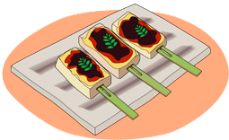

2019年12月号
「おでん」の知られざる世界（part1）

いよいよ寒さが深まる季節の到来ですが、日本が誇る食文化の一つに「おでん」があります！
鍋料理の喫食ランキングでも、毎年1位を独走する「おでん」ですが、その歴史はとても古く、1000年かけて発達し、今のような全国各地の「おでん」の食文化が形成されたようです。
「おでん」のルーツは、室町時代に流行した「豆腐田楽」で、その後、進化を続けたおでんは、江戸時代に庶民のファストフードとして愛され、やがて「煮込みおでん」に変化し、屋台や居酒屋で食べる料理から、今では家庭で食べる料理となりました。
おでんの語源は、拍子木型に切った豆腐に竹串を刺して焼いた「田楽」＝「豆腐田楽」の「田楽」という言葉に「お」をつけ、丁寧な言葉（女房言葉）で、「楽」を省略して「おでん」になったようです。
「田楽」とは、元来、田植え時の豊穣祈願で行う笛や太鼓による楽舞（田楽舞）のことですが、拍子木型に切った豆腐を串に刺して焼く、その形が田楽舞に似ていることから、「田楽」という名前がつきました。
その後、味噌をつけた「味噌田楽」が流行し、食材は豆腐だけに留まらず、こんにゃく、芋、魚などバリエーションが増えていったのですが、焼き時間を惜しむ、せっかちな江戸っ子のために、最初から煮込んでおいて、注文を受けたら、すぐに味噌を塗って提供するというスタイルに変化し、現在の「おでん」の原型が生まれたのです！！
この続きは、もっと寒さが増す次月号でご紹介することとしましょう。
ということで、皆さんは、「おでん」でも食べながら、しばしお待ちください（笑）
 次月号へ
次月号へ